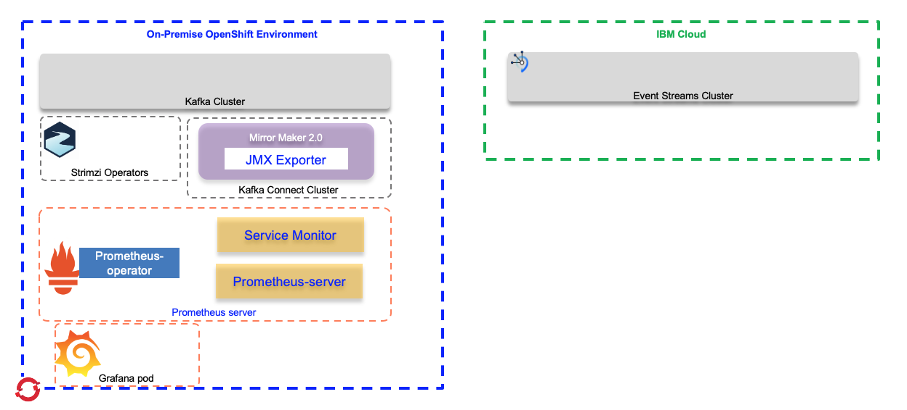

Monitoring Mirror Maker and kafka connect cluster
The goal of this note is to go over some of the details on how to monitor Mirror Maker 2.0 metrics using Prometheus and present them with Grafana dashboards.
Prometheus is an open source systems monitoring and alerting toolkit that, with Kubernetes, is part of the Cloud Native Computing Foundation. It can monitor multiple workloads but is normally used with container workloads.
The following figure presents the prometheus generic architecture as described from the product main website. Basically the Prometheus server hosts jobs to poll HTTP end points to get metrics from the components to monitor. It supports queries in the format of PromQL, that product like Grafana can use to present nice dashboards, and it can push alerts to different channels when some metrics behave unexpectedly.

In the context of data replication between kafka clusters, we want to monitor the mirror maker 2.0 metrics like the worker task states, source task metrics, task errors,... The following figure illustrates the components involved: The source Kafka cluster, the Mirror Maker 2.0 cluster, which is based on Kafka Connect, the Prometheus server and the Grafana.

As all those components run on kubernetes, most of them could be deployed via Operators using Custom Resource Definitions.
To support this monitoring we need to do the following steps:
- Add metrics configuration to your Mirror Maker 2.0 cluster
- Package the mirror maker 2 to use JMX Exporter as Java agent so it exposes JMX MBeans as metrics accessibles via HTTP.
- Deploy Prometheus using Operator
- Optionally deploy Prometheus Alertmanager
- Deploy Grafana and configure dashboard
Installation and configuration
Prometheus deployment inside Kubernetes uses operator as defined in the coreos github. The CRDs define a set of resources: the ServiceMonitor, PodMonitor, and PrometheusRule.
Inside the Strimzi github repository, we can get a prometheus.yml file to deploy prometheus server using the Prometheus operator. This configuration defines, ClusterRole, ServiceAccount, ClusterRoleBinding, and the Prometheus resource instance. We have defined our own configuration in this file.
For your own deployment you have to change the target namespace, and the rules
You need to deploy Prometheus and all the other elements inside the same namespace or OpenShift project as the Kafka Cluster or the Mirror Maker 2 Cluster.
To be able to monitor your own on-premise Kafka cluster, you need to enable Prometheus metrics. An example of Kafka cluster Strimzi based deployment with Prometheus setting can be found in our kafka cluster definition. The declarations are under the metrics stanza and define the rules for exposing the Kafka core features.
Install Prometheus Operator
We recommend reading Prometheus operator product documentation.
At a glance the Prometheus operator deploy and manage a prometheus server and watches new pods to monitor when they are scheduled within k8s.

Source: prometheus-operator architecture
After creating a namespace or reusing the Kafka cluster namespace, you need to deploy the Prometheus operator and the related service account, cluster role, role binding... We have reuse the monitoring/install/bundle.yaml from Prometheus operator github, but doing updates with a namespace sets for our project (e.g jb-kafka-strimzi) and renaming the cluster role and binding from 'prometheus-operator' to 'prometheus-operator-strimzi` to avoid role conflict with existing prometheus deployment on OpenShift, as those roles are at the cluster level. Once done we deploy all those components:
oc apply -f bundle.yaml
# Authorise the prometheus-operator to do cluster work
oc adm policy add-cluster-role-to-user prometheus-operator --serviceaccount prometheus-operator -n eda-strimzi-kafka24
When you apply those configurations, the following resources are visibles:
| Resource | Description |
|---|---|
| ClusterRole | RBAC role for cluster-scoped resources. To grant permissions to Prometheus to read the health endpoints exposed by the Kafka and ZooKeeper pods, cAdvisor and the kubelet for container metrics. |
| ServiceAccount | For the Prometheus pods to run under. A service account provides an identity for processes that run in a Pod. |
| ClusterRoleBinding | To bind the ClusterRole to the ServiceAccount. |
| Deployment | To manage the Prometheus Operator pod. |
| ServiceMonitor | To define the service to monitor with the Prometheus pod. |
| Prometheus | To manage the configuration of the Prometheus pod. |
| PrometheusRule | To manage alerting rules for the Prometheus pod. |
| Secret | To manage additional Prometheus settings. |
| Service | To allow applications running in the cluster to connect to Prometheus (for example, Grafana using Prometheus as datasource) |
- To delete the operator do:
oc delete -f bundle.yaml
Deploy prometheus
Note
The following section is including the configuration of a Prometheus server monitoring a full Kafka Cluster. For Mirror Maker 2 or Kafka Connect monitoring, the configuration will have less rules, and parameters. See next section.
Deploy the prometheus server by first changing the namespace and also by adapting the original examples/metrics/prometheus-install/prometheus.yaml file.
curl -s https://raw.githubusercontent.com/strimzi/strimzi-kafka-operator/master/examples/metrics/prometheus-install/prometheus.yaml | sed -e "s/namespace: myproject/namespace: eda-strimzi-kafka24/" > prometheus.yml
If you are using AlertManager (see section below) Define the monitoring rules of the kafka run time: KafkaRunningOutOfSpace, UnderReplicatedPartitions, AbnormalControllerState, OfflinePartitions, UnderMinIsrPartitionCount, OfflineLogDirectoryCount, ScrapeProblem (Prometheus related alert), ClusterOperatorContainerDown, KafkaBrokerContainersDown, KafkaTlsSidecarContainersDown
curl -s
https://raw.githubusercontent.com/strimzi/strimzi-kafka-operator/master/examples/metrics/prometheus-install/prometheus-rules.yaml sed -e "s/namespace: default/namespace: jb-kafka-strimzi/" > prometheus-rules.yaml
oc apply -f prometheus-rules.yaml oc apply -f prometheus.yaml # once deploye, get the state of the server with oc get prometheus NAME VERSION REPLICAS AGE prometheus 1 52s
The Prometheus server configuration uses service discovery to discover the pods (Mirror Maker 2.0 pod or kafka, zookeeper pods) in the cluster from which it gets metrics. In fact the following configuration is set in prometheus.yaml file. The approach is to deploy one Prometheus server instance per namespace where multiple applications are running. The app label needs to be set on all components to be monitored.
serviceMonitorSelector: matchLabels: app: strimzi
or use a monitor all approach:
serviceMonitorSelector: {}
Monitoring rules can be added via config map that is referenced in the prometheus.yaml file:
additionalScrapeConfigs: name: additional-scrape-configs key: prometheus-additional.yaml
Access the expression browser
To access from web browser we can expose the prometheus server via a route using the service operator defined in the prometheus.yaml file:
apiVersion: v1 kind: Service metadata: labels: prometheus: prometheus name: prometheus-operated namespace: eda-strimzi-kafka24 spec: ports: - name: web port: 9090 targetPort: web selector: app: strimzi prometheus: prometheus sessionAffinity: ClientIP
Once define the url will be something like:
http://prometheus-route-eda-strimzi-kafka24.gse-eda-demo-43-f......us-east.containers.appdomain.cloud/graph
Configure monitoring
To start monitoring our Kafka 2.4 cluster we need to add some monitoring prometheus scrapper definitions, named service monitor. An example of such file can be found here
oc apply -f strimzi-service-monitor.yaml oc describe servicemonitor
Mirror maker 2.0 monitoring
To monitor MM2 with Prometheus we need to add JMX Exporter and run it as Java agent.The jar file for JMX exporter agent can be found here. We copied a version in the folder mirror-maker-2/libs. We have adopted a custom mirror maker 2.0 docker imaged based on Kafka 2.4. We are detailing how to build this image using this Dockerfile in this separate note.
The next step is to define a service monitor Once the Mirror Maker 2.0 is connected...
Install Grafana
Grafana provides visualizations of Prometheus metrics. Again we will use the Strimzi dashboard definition as starting point to monitor Kafka cluster but also mirror maker.
- Deploy Grafan to OpenShift and expose it via a service:
oc apply -f grafana.yaml
In case you want to test grafana locally run: docker run -d -p 3000:3000 grafana/grafana
Kafka Explorer
Configure Grafana dashboard
To access the Grafana portal you can use port forwarding like below or expose a route on top of the grafana service.
- Use port forwarding:
export PODNAME=$(oc get pods -l name=grafana | grep grafana | awk '{print $1}') kubectl port-forward $PODNAME 3000:3000
Point your browser to http://localhost:3000.
- Expose the route via cli
Add the Prometheus data source with the URL of the exposed routes. http://prometheus-operated:9090
Alert Manager
As seen in previous section, when deploying prometheus we can set some alerting rules on elements of the Kafka cluster. Those rule examples are in the file The prometheus-rules.yaml. Those rules are used by the AlertManager component.
Prometheus Alertmanager is a plugin for handling alerts and routing them to a notification service, like Slack. The Prometheus server is a client to the Alert Manager.
- Download an example of alert manager configuration file
curl -s https://raw.githubusercontent.com/strimzi/strimzi-kafka-operator/master/examples/metrics/prometheus-install/alert-manager.yaml > alert-manager.yaml
- Define a configuration for the channel to use, by starting from the following template
curl -s https://raw.githubusercontent.com/strimzi/strimzi-kafka-operator/master/examples/metrics/prometheus-alertmanager-config/alert-manager-config.yaml > alert-manager-config.yaml
-
Modify this file to reflect the remote access credential and URL to the channel server.
-
Then deploy the secret that matches your config file .
oc create secret generic alertmanager-alertmanager --from-file=alertmanager.yaml=alert-manager-config.yaml
oc create secret generic additional-scrape-configs --from-file=./local-cluster/prometheus-additional.yaml --dry-run -o yaml | kubectl apply -f -